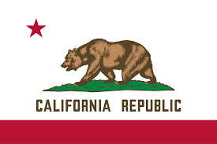
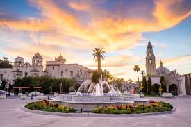

California
California, a western U.S. state, stretches from the Mexican border along the Pacific for nearly 900 miles. Its terrain includes cliff-lined beaches, redwood forest, the Sierra Nevada Mountains, Central Valley farmland and the Mojave Desert. The city of Los Angeles is the seat of the Hollywood entertainment industry. Hilly San Francisco is known for the Golden Gate Bridge, Alcatraz Island and cable cars

FUN FACT!
California has many fun facts, including being home to the tallest, largest, and oldest trees in the world, hosting both the highest and lowest points in the contiguous US, and having an estimated 10,000 earthquakes each year. The state's motto is "Eureka!" and it's famous for the first Disney theme park, Disneyland, which opened in 1955.
TOURIST SPOT IN CALIFORNIA
Francisco
San Diego
Balbo Park

About California
Climate
Most of the state has a Mediterranean climate. The cool California Current offshore often creates summer fog near the coast. Farther inland, there are colder winters and hotter summers. The maritime moderation results in the shoreline summertime temperatures of Los Angeles and San Francisco being the coolest of all major metropolitan areas of the U.S. and uniquely cool compared to areas on the same latitude in the interior and on the east coast of the North American continent. Even the San Diego shoreline bordering Mexico is cooler in summer than most areas in the contiguous U.S. Just a few miles inland, summer temperature extremes are significantly higher, with downtown Los Angeles being several degrees warmer than at the coast. The same microclimate phenomenon is seen in the climate of the Bay Area, where areas sheltered from the ocean experience significantly hotter summers and colder winters in contrast with nearby areas closer to the ocean.
Ecology
California is one of the ecologically richest and most diverse parts of the world, and includes some of the most endangered ecological communities. California is part of the Nearctic realm and spans a number of terrestrial ecoregions.[145] California's large number of endemic species includes relict species, which have died out elsewhere, such as the Catalina ironwood (Lyonothamnus floribundus). Many other endemics originated through differentiation or adaptive radiation, whereby multiple species develop from a common ancestor to take advantage of diverse ecological conditions such as the California lilac (Ceanothus).[citation needed] Many California endemic have become endangered, as urbanization, logging, overgrazing, and the introduction of exotic species have encroached on their habitat.
Architecture
Apart from the architecture of the California missions and other colonial buildings, there are many architectonic reminiscences of the Spanish period, especially in Southern California, where white stucco walls, red roof tiles, curvilinear gables, arched windows, balconies or even bell towers are incorporated into modern building styles in what is known as the Spanish Colonial Revival architecture, a United States architectural stylistic movement that came about in the early 20th century.[18]